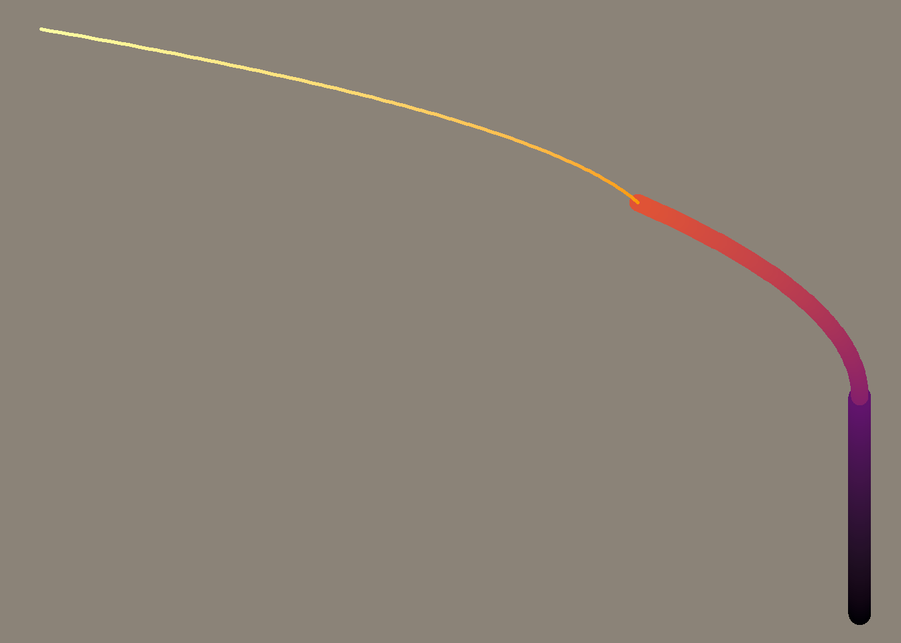
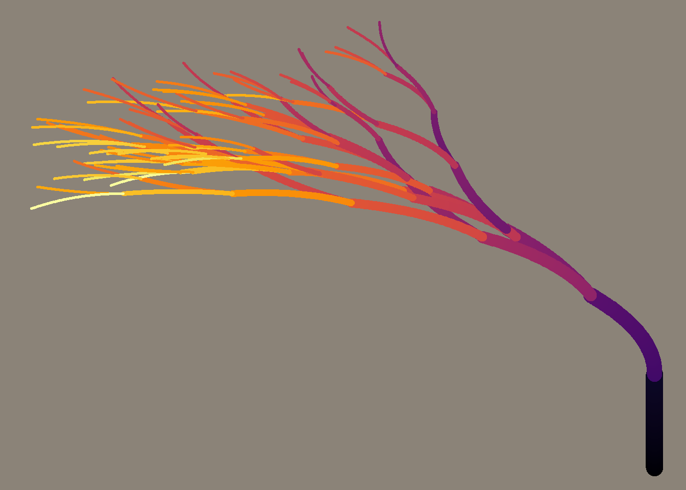

flametree学习
28 Jul 2020
2744 Words|Read in about 6 Min|本文总阅读量次

learn code
flametree_plot
## function (tree, background = "antiquewhite4", palette = "viridis::inferno")
## {
## mapping <- ggplot2::aes(x = coord_x, y = coord_y, group = id_path,
## size = seg_wid, color = seg_col)
## picture <- ggplot2::ggplot(data = tree, mapping = mapping) +
## ggforce::geom_bezier2(show.legend = FALSE, lineend = "round") +
## paletteer::scale_color_paletteer_c(palette = palette) +
## theme_mono(color = background)
## return(picture)
## }
## <bytecode: 0x00000000210b9a38>
## <environment: namespace:flametree>绘图源代码中使用了ggforce::geom_bezier2函数去绘制图形，我在看这个函数的源代码时发现StatBezier在数据转换使用了一个ggforce:::getBeziers函数，没怎么看明白cpp代码，而且ggplot2的扩展我也还没怎么弄清。不过大概意思就是根据贝塞尔曲线生成一系列的点，然后使用geom_path绘制图形。
搜了下贝塞尔曲线是什么，参考了https://github.com/BooheeFE/weekly/issues/31。
然后摸索了一下函数flametree::flametree_grow()生成的数据，它生成了每三个点为一组的数据。这里我们就看看前三行数据,就不用knitr输出整个表了
## # A tibble: 3 x 10
## coord_x coord_y seg_deg seg_len seg_col seg_wid id_time id_path id_step
## <dbl> <dbl> <dbl> <dbl> <dbl> <dbl> <int> <int> <int>
## 1 0 0 90 1 0 0.905 1 1 0
## 2 0 0.5 90 1 0.5 0.905 1 1 1
## 3 0 1 90 1 1 0.905 1 1 2
## # ... with 1 more variable: id_leaf <lgl>试着按照参考的三个点的贝塞尔曲线写了个函数，当然推导过程我还没看看怎么推导的~~
r_getbeziers <- function(data,coordx,coord_y,n = 100){
p_x <- data$coord_x
p_y <- data$coord_y
n_t <- seq(0,1,length.out = n)
outx <- (1-n_t)^2*p_x[1] + 2*(1-n_t)*n_t*p_x[2] +n_t^2*p_x[3]
outy <- (1-n_t)^2*p_y[1] + 2*(1-n_t)*n_t*p_y[2] +n_t^2*p_y[3]
out <- tibble(x = outx , y = outy)
out
}验证一下,
data %>% r_getbeziers(coordx,coord_y)->a
b <- ggforce:::getBeziers(data$coord_x,data$coord_y,id = data$id_path,100)
all(b$paths == a)## [1] TRUE贝塞尔曲线就到这吧。所以剩下一个绘制flametree树图的问题就是如何生成每三个点为一组的数据了,当然，按照flametree::flametree_plot函数所示，数据还需要加上线的大小以及颜色。
flametree_grow
## function (seed = 286, time = 6, scale = c(0.8, 0.9), angle = c(-10,
## 10, 20), split = 2, prune = 0)
## {
## param <- list(seed = seed, time = time, scale = scale, angle = angle,
## split = split, prune = prune)
## set.seed(param$seed)
## tree <- grow_sapling() %>% grow_tree(param) %>% shape_tree()
## tree$id_leaf <- tree$id_time == max(tree$id_time)
## return(tree)
## }
## <bytecode: 0x0000000018fd41f0>
## <environment: namespace:flametree>这些参数，seed明显就是用来可重复的，time帮助文档说是迭代的次数，经过摸索，它是要生成多少次树枝，而split是生成的分枝个数，prune是修剪的概率。prune的实现原理是使用sample_n跟stats::rbinom实现的，可以看看flametree:::grow_shoots的代码，这里默认0是不修剪，暂时先不管它了。
看下time = 2,split = 1的图长什么样。
flametree::flametree_grow(time = 2,split = 1,angle = 10,scale = 0.9) %>%
flametree::flametree_plot()
grow_sapling
## # A tibble: 1 x 9
## x_0 y_0 x_1 y_1 x_2 y_2 seg_deg seg_len id_time
## <dbl> <dbl> <dbl> <dbl> <dbl> <dbl> <dbl> <dbl> <int>
## 1 0 0 0 0.5 0 1 90 1 1可以看到生成一个初始tibble,(x_0:y_2)列是绘制贝塞尔曲线的三个点，经过flametree:::shape_tree函数最后转成长列表格式。seg_deg是生成的角度，现在可能不太好说明。seg_len是树枝的长度，id_time则是进行的迭代id。
grow_tree
## function (sapling, param)
## {
## tree <- purrr::accumulate(.x = 1:param$time, .f = grow_layer,
## .init = sapling, param = param)
## return(tree)
## }
## <bytecode: 0x0000000019187398>
## <environment: namespace:flametree>可以看到，.init参数是sapling,即生成的数据框列表第一个是sapling,之后进行迭代。 花了挺久时间才明白.init参数是什么作用。
grow_layer
## function (shoots, time, param)
## {
## new_shoots <- purrr::map_dfr(.x = 1:param$split, .f = grow_shoots,
## shoots = shoots, param = param)
## return(new_shoots)
## }
## <bytecode: 0x0000000019191088>
## <environment: namespace:flametree>可以看到split参数就是用来生成多少行的数据框的， 先看下grow_shoots源码，
## function (time, shoots, param)
## {
## n_shoots <- nrow(shoots)
## n_pruned <- stats::rbinom(n = 1, size = n_shoots - 1, prob = param$prune)
## ch_seg_len <- sample(x = param$scale, size = n_shoots, replace = TRUE)
## ch_seg_deg <- sample(x = param$angle, size = n_shoots, replace = TRUE)
## shoots <- shoots %>% dplyr::mutate(x_0 = x_2, y_0 = y_2,
## seg_len = seg_len * ch_seg_len, x_1 = x_0 + extend_x(seg_len/2,
## seg_deg), y_1 = y_0 + extend_y(seg_len/2, seg_deg),
## seg_deg = seg_deg + ch_seg_deg, id_time = id_time + 1L,
## x_2 = x_0 + extend_x(seg_len, seg_deg), y_2 = y_0 + extend_y(seg_len,
## seg_deg), ) %>% dplyr::sample_n(size = n_shoots -
## n_pruned)
## return(shoots)
## }
## <bytecode: 0x00000000191b14c0>
## <environment: namespace:flametree>time参数并没有在grow_shoots使用到。所以当用1:param$split为time参数，且默认split为2时,生成的点是有可能跟原来重复的。也就是有的地方geom_path会绘制多次。验证一下，
## [1] 192## [1] 171可以看到有些行数被去重了。（应该是这样的） >这儿是不是应该修改成split的两个不会重复呢？(虽然这样想，我还没试着改下)

这个图很显然就是第一个枝桠没有生出两个分支的例子了。 >备注：重新看下作者的帮助文档，她也说了split是生成最大的分支的意思（怪我一开始没理解这参数的意思）
grow_shoots
这个函数源码正如上所示， 起始的shoots为sapling,即
然后这个函数代码中，第三第四行分别scale,angle的随机数，默认参数的随机选择比较少些,试下参数改成scale= runif(100,0.8,0.9)。

hh,有必要么。。。
接着看下最后的操作，下一个生成的shoots会是啥，这里我们用参数split = 1来看看，就是函数accumulate累加生成的shoots都为1行。如果按照默认参数time = 6,split = 2的话，起始shoots为一行，之后变1*2行，1*2*2行,…1*2^6行。
shoots <- shoots %>% dplyr::mutate(
x_0 = x_2,
y_0 = y_2,
seg_len = seg_len * ch_seg_len,
x_1 = x_0 + extend_x(seg_len/2,seg_deg),
y_1 = y_0 + extend_y(seg_len/2, seg_deg),
seg_deg = seg_deg + ch_seg_deg,
id_time = id_time + 1L,
x_2 = x_0 + extend_x(seg_len, seg_deg),
y_2 = y_0 + extend_y(seg_len, seg_deg),)可以看到，p0第一个点，p1第二个点，p2第三个点，新的shoots的p0是上一个shoots的p2,seg_len跟seg_deg就是新生成的shoots长度跟角度的修改。
## function (distance, angle)
## {
## distance * cos(radians(angle))
## }
## <bytecode: 0x000000001a495f70>
## <environment: namespace:flametree>## function (degree)
## {
## 2 * pi * degree/360
## }
## <bytecode: 0x000000001a496bb0>
## <environment: namespace:flametree>然后p1点的延伸使用的是新的shoots的长度跟原来的shoots的角度,p2点的延伸使用新的shoots的长度与角度生成。（为什么不都使用新的长度跟角度呢）
所以假设ch_seg_len = 0.9,ch_seg = 10的话,新的shoots即为，
# A tibble: 1 x 9
x_0 y_0 x_1 y_1 x_2 y_2 seg_deg seg_len id_time
<dbl> <dbl> <dbl> <dbl> <dbl> <dbl> <dbl> <dbl> <int>
1 0 1 2.76e-17 1.45 -0.156 1.89 100 0.9 2